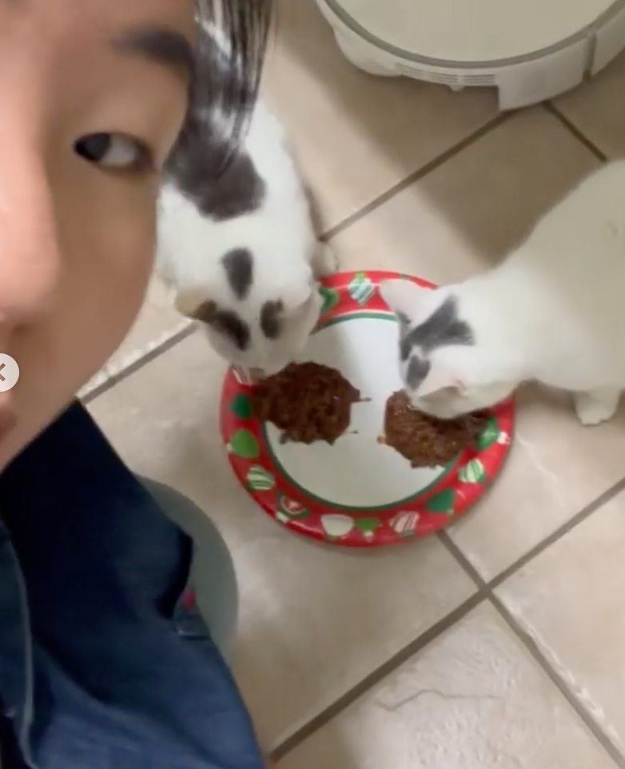
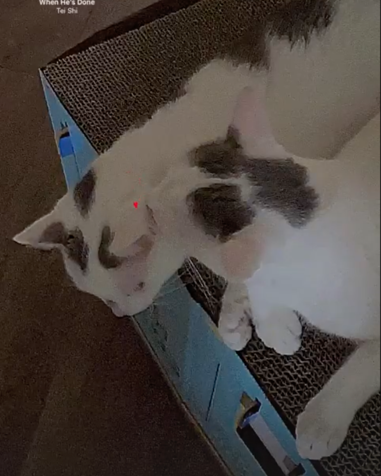
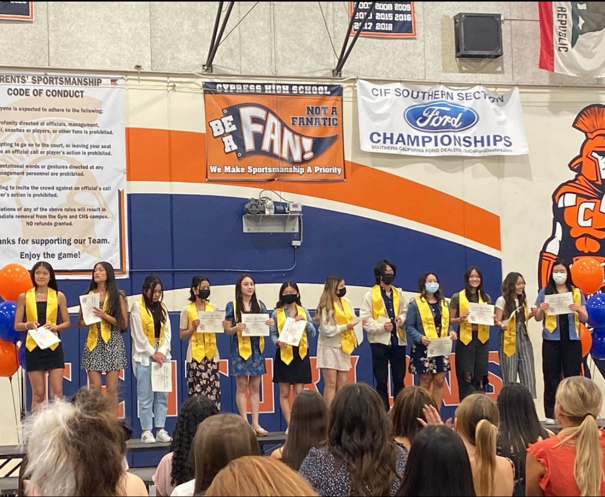
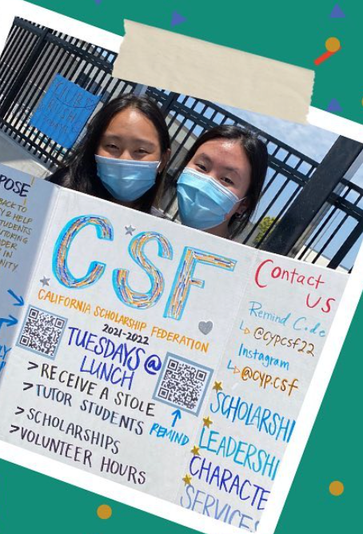
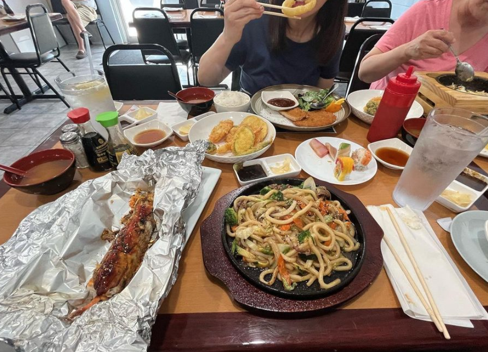
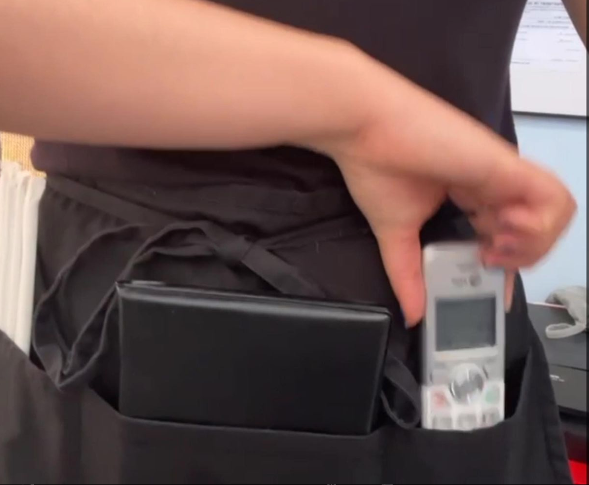
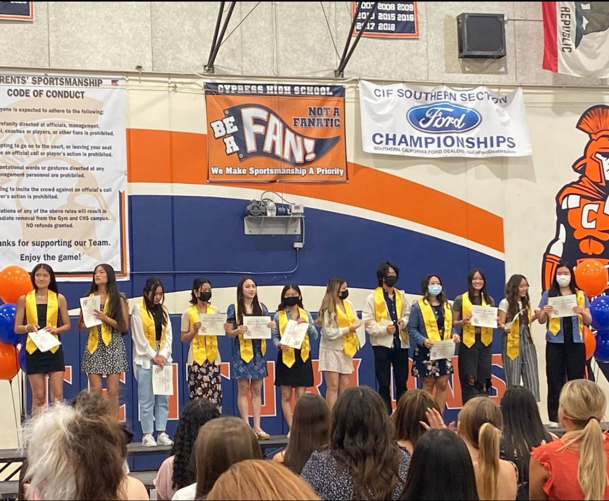
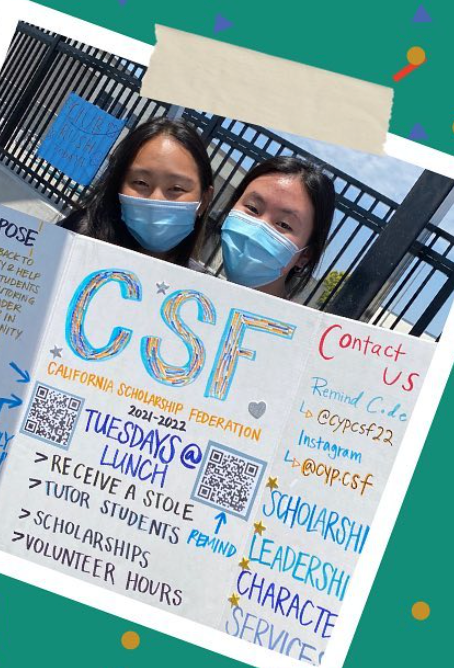
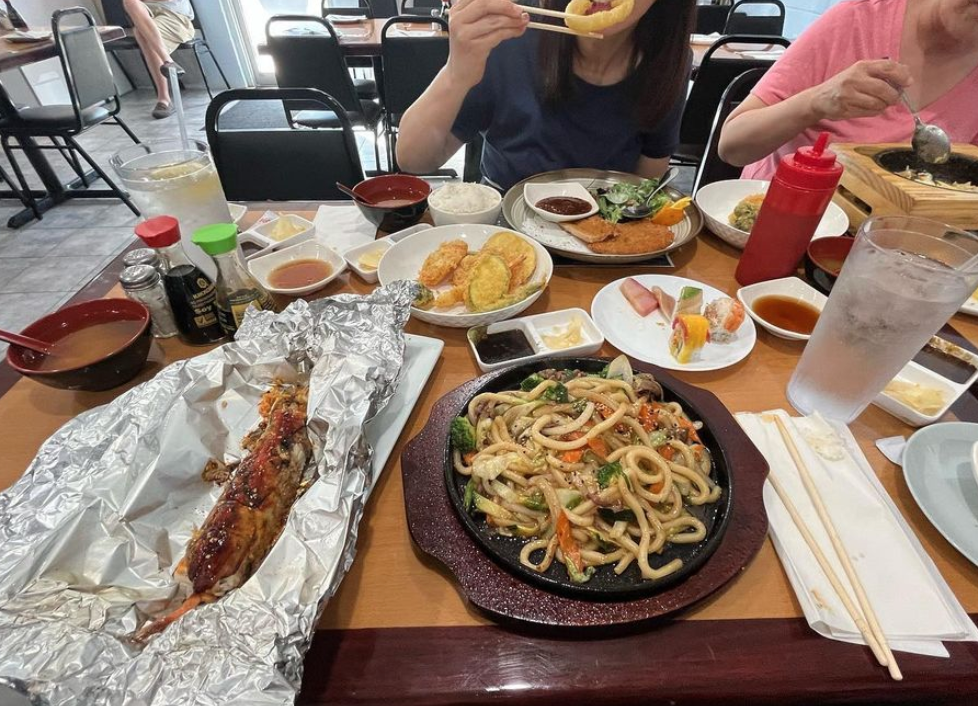
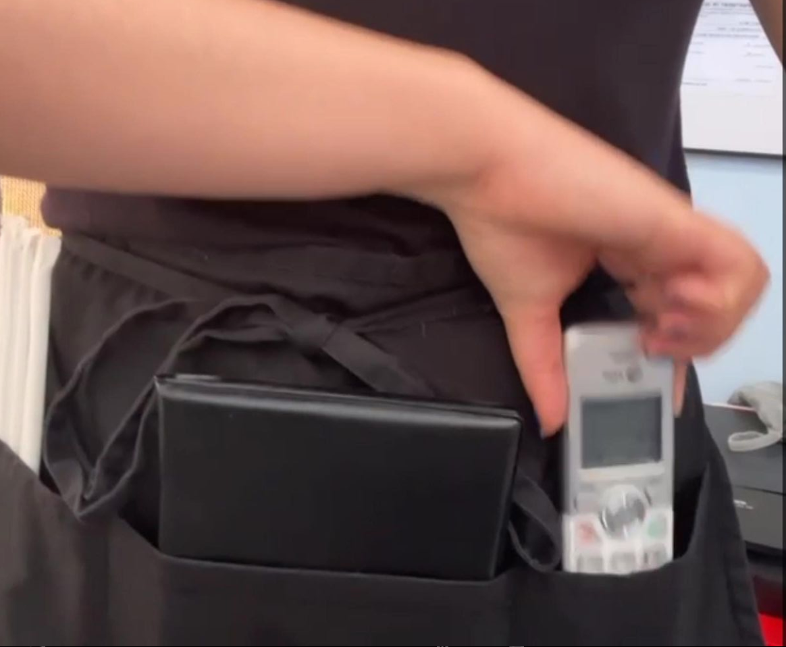

Joyce Yu
A little about myself in a third person perspective: :)
Allow me to introduce Joyce Yu, a driven and ambitious individual who is currently pursuing her freshman year of college. Joyce's passion for mental health and wellbeing has shaped her professional experiences, making her a compassionate advocate for others. With a blend of dedication, leadership skills, and real-world experience, Joyce has made a positive impact in various roles.
During her high school years, Joyce had the opportunity to intern at an organization called Illumination, where the focus was on promoting mental health and wellbeing among high school students. This experience allowed her to immerse herself in the world of mindfulness and learn firsthand about the importance of emotional well-being. Joyce embraced this opportunity, gaining valuable insights into the challenges young individuals face and the strategies that can support their mental health.
In her senior year of high school, Joyce's exceptional leadership skills were recognized when she was elected as the president of the California Federation Scholarship honors society. In this role, she demonstrated her ability to effectively organize and lead a team of like-minded individuals who shared a passion for education and academic excellence. Joyce's dedication to empowering her peers and creating a supportive academic environment made a lasting impact on the society and its members.
Additionally, Joyce gained valuable work experience as a waitress at a sushi/Korean restaurant called Toyko 1 during the summer of 2022. This experience allowed her to develop strong customer service skills, honing her ability to communicate effectively and provide exceptional service to patrons. Joyce's time at the restaurant taught her the importance of teamwork, adaptability, and maintaining a professional demeanor in a fast-paced environment.
Beyond her professional experiences, Joyce brings a well-rounded approach to her academic pursuits. As a freshman in college, she is eager to explore her interests and further expand her knowledge in the field of mental health and psychology. Joyce's commitment to personal growth and learning is evident in her academic endeavors, where she actively seeks out opportunities to deepen her understanding of human behavior and psychological well-being.
Outside of her academic and professional pursuits, Joyce enjoys engaging in activities that promote self-care and personal growth. She values her own mental health and understands the importance of maintaining a balanced lifestyle. Whether it's practicing mindfulness, engaging in creative hobbies, or spending time with loved ones, Joyce prioritizes activities that nurture her own well-being.
In summary, Joyce Yu is a compassionate and ambitious individual who is dedicated to promoting mental health and well-being. Through her internship at Illumination, leadership role in the California Federation Scholarship honors society, and experience in the restaurant industry, Joyce has honed her interpersonal skills, leadership abilities, and commitment to excellence. As she continues her academic journey, Joyce's genuine passion for mental health and her diverse experiences make her a promising advocate for positive change in the field.
Experience
Leadership Positions
• Co-Presidant Senior Year of high school
• Publicisit in Junior Year of high school
• Free tutoring
• Provide scholarships to students
• Maintain the leader on board and the member in the honors society
Internship
• Review lesson plans to help improve and have more effiect mindfulness sessions
• Actively particapated in mindfulness
• Held meetings and gave fresh and innovative ideas
• Help create their mindfulness app
Cat Sitter
• Feed the cats wet food every day
• Communicate with owner on how the cats need to be treated
• Play with cats
• Clean the litter box everyday
Education
UC Riverside
Portfolio







 

